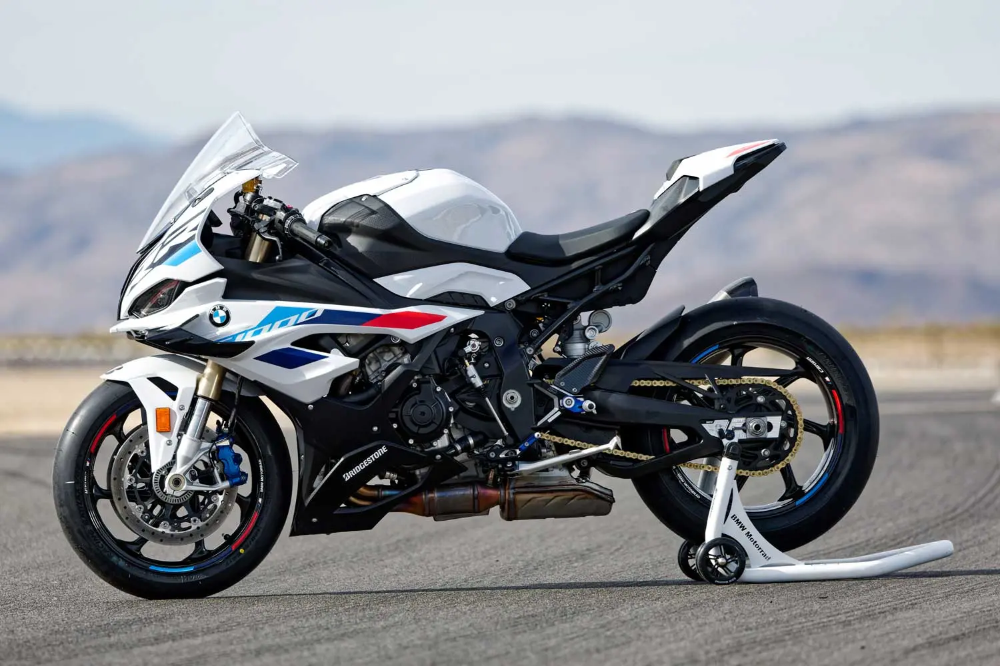
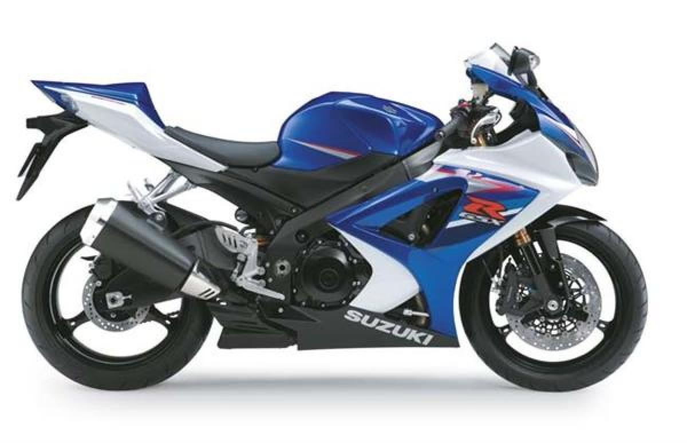
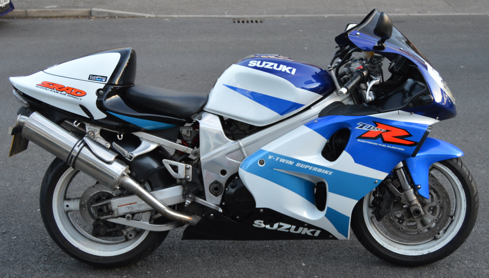

KAWASAKI Ninja H2R
A Ninja H2R igazi motorkerékpáros mérföldkőnek számít, amely a maximumra van hangolva, s a jelenlegi technológiai lehetőséget tekintve a csúcs a motoriparban. Amikor a Kawasakinak először fogant meg a Ninja H2R gondolata a fejében, az alapkoncepció az volt, hogy egy olyan gépet alkossanak, amely olyan gyorsulást teszi lehetővé, amilyet legtöbb motoros még korábban sosem tapasztalt.Ennek eléréséhez a kulcsot a supercharger (feltöltős) motor jelentette, amelyet teljesen házon belül fejlesztett ki a Kawasaki Heavy Industries (KHI) csoport: Gázturbinák és Gépek, Űrrepülés és Vállalati Technológiák Divíziója."Built Beyond Belief", azaz azért készült, hogy minden képzeletet felülmúljon. Ezt a motort nem gyártják közútihasználatra.
SPECIFIKÁCIÓK:
- 998 cm³
- Lökettérfogat
- 228 kW {310 LE} / 14,000-es fordulaton
Maximális teljesítmény (EU Spec)

BMW S 1000 RR
Bár hazánkban az ezres sportmotor fogalma eggyé vált az ezres GSX-R-rel, 2009 után a bajor sportgép vált etalonná a kategóriában. A legenda szerint a GSX-R-t vették alapul a tervezés elején, és elsőként raktak teli lakossági sportmotort elektronikával. Viszont az egykerék-kontroll nem volt valami kifinomult, és néhány blokk is felrobbant még
Suzuki GSX-R 1000 K7
Sok tekintetben még ma is etalon. Soha előtte nem egyesült ilyen formában az erő a kezelhetőséggel, és még jól is nézett ki. Viszont később vázrepedés miatt visszahívták, egy utólagos merevítés beépítésével szüntetve meg a problémát. A K7-es modellnek már módosítottak a vázán, viszont a dupla doboskipufogóknak köszönhetően közel hét kilót szedett magára. Azonban a gyári kipufogót úgyis mindenki ledobja, és ekkor megkapjuk az egyik legjobb diszkontárú, használt ezrest.
Suzuki TL1000R
Az elrettentő példa. A TL1000S első kiadása is hemzsgett a konstrukciós hibáktól, de a mérsékelt piaci sikerek ellenére piacra dobták az R verziót. Nos, ez sem lett szép, erős, vagy könnyű. Aki szerint a nagy V2-esek azért jók, mert nyomatékosak, az sose ment még sornégyes ezressel. A TL-t egy 600-as gixxer is leveri 400 méteren, lent darabos, fent meg még azelőtt ledadog, mielőtt rendesen elindulna. Cserébe viszont nehéz, zabálja a benzint, és el is romlik.
